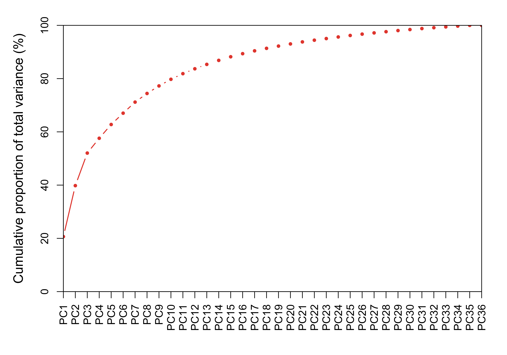
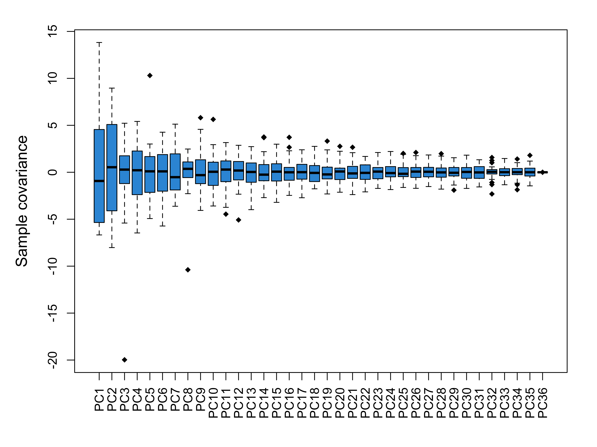

This procedure runs Principal Components Analysis (PCA) for quality control and sample analysis purposes. It uses a data matrix of variables (rows) and samples (columns), such as a normalized transcriptome data set, as input, and plots results based on one or multipel sample characteristics, .
Perturbed rhythmic activation of signaling pathways in mice deficient for Sterol Carrier Protein 2-dependent diurnal lipid transport and metabolism. (GSE67426)
Jouffe C, Gobet C, Martin E, Métairon S et al. Perturbed rhythmic activation of signaling pathways in mice deficient for Sterol Carrier Protein 2-dependent diurnal lipid transport and metabolism. Sci Rep 2016 Apr 21;6:24631. PMID: 27097688.
Comparison of liver mRNA expression from Scp2 KO and wild-type mice harvested every 2 hours during 3 consecutive days.
This analysis runs PCA using the data of wild type mice and a subset of genes with high between sample variance.
Principal Components Analysis is run on 2577 variables and 36 samples.
Total variance contributed by each PC.

Figure 1. Cummulative variance contributed by ordered PCs. Click link below to view full table:
Covariance of each PC by samples.
Table 1. Sample covariance of first 8 PCs. Click link below to view all PCs.
| PC1 | PC2 | PC3 | PC4 | PC5 | PC6 | PC7 | PC8 | |
|---|---|---|---|---|---|---|---|---|
| WT_00Hr_1 | -5.3653 | 0.4297 | -0.3260 | 2.9211 | -1.0051 | 0.5299 | -2.5754 | 1.0975 |
| WT_00Hr_2 | -5.5159 | 1.1305 | -0.3443 | 1.6171 | -2.6989 | 2.0381 | 3.4381 | -0.4878 |
| WT_00Hr_3 | -5.5803 | 0.7641 | -2.2733 | -5.0217 | 0.4280 | -0.0552 | -0.4308 | 0.3637 |
| WT_02Hr_1 | -6.2424 | -2.0961 | 0.5513 | 2.1851 | -2.1005 | 0.4040 | -1.5719 | 1.1051 |
| WT_02Hr_2 | -6.2833 | -1.0597 | -1.1712 | 2.1795 | 0.7454 | 1.8716 | -3.5054 | 0.9653 |
| WT_02Hr_3 | -6.6739 | -1.4789 | -0.7135 | -3.6441 | -2.4900 | -2.9372 | 2.4520 | -2.2807 |
| WT_04Hr_1 | -6.2174 | -3.0287 | -0.1887 | 3.0080 | -2.6233 | 1.0742 | -2.7248 | 1.6584 |
| WT_04Hr_2 | -3.5803 | -7.1737 | -1.3746 | 1.1111 | 2.8587 | 2.4888 | -2.4172 | 0.6770 |
| WT_04Hr_3 | -5.6291 | -2.9376 | -3.7645 | -0.9480 | -4.9302 | 0.1865 | -0.9530 | -0.6430 |
| WT_06Hr_1 | -2.7732 | -7.7162 | 1.2366 | 1.6612 | 2.0917 | -2.4826 | 0.4154 | 0.7859 |
| WT_06Hr_2 | -2.7276 | -6.2334 | -0.7832 | 0.1404 | 1.8661 | 2.9411 | -0.6162 | 2.4746 |
| WT_06Hr_3 | -1.4733 | -5.6720 | 0.0014 | -3.0785 | -3.6296 | -0.4545 | 2.2566 | 1.8753 |
| WT_08Hr_1 | 3.3669 | -7.9168 | 5.1325 | 1.8984 | -0.6489 | -0.9367 | 4.4768 | 1.0138 |
| WT_08Hr_2 | 2.5534 | -7.5441 | 2.6989 | -0.2472 | 0.2528 | 1.5924 | 0.1400 | 0.0760 |
| WT_08Hr_3 | 3.4187 | -8.0227 | 1.0088 | -3.7609 | 3.0087 | -0.8807 | -1.1447 | 1.6713 |
| WT_10Hr_1 | 7.0086 | -2.3789 | 4.4519 | -0.5140 | -0.0560 | -0.5030 | 1.1038 | 1.1676 |
| WT_10Hr_2 | 6.0623 | -5.6915 | 5.0846 | 0.0447 | 0.5605 | 3.8388 | -2.1658 | -10.3869 |
| WT_10Hr_3 | 5.6923 | -3.8802 | 2.1214 | -2.2565 | 1.7470 | -2.8569 | -1.5845 | -0.0495 |
| WT_12Hr_1 | 7.0959 | -3.1205 | 5.2216 | 2.5552 | -1.8742 | -1.7857 | 4.1083 | 1.0528 |
| WT_12Hr_2 | 13.8210 | -4.3316 | -19.9750 | 2.7597 | -2.2019 | -1.9665 | -0.3363 | -1.0988 |
| WT_12Hr_3 | 8.9042 | 1.7038 | 2.4947 | -2.7234 | 1.5983 | -2.0569 | -1.0050 | 1.9138 |
| WT_14Hr_1 | 6.6249 | 5.3288 | 3.9825 | 0.7294 | -0.4218 | 1.2382 | -3.6207 | 2.0477 |
| WT_14Hr_2 | 6.2264 | 5.3059 | 2.7643 | 0.2601 | -3.3886 | 3.3259 | -0.3437 | 0.3636 |
| WT_14Hr_3 | 6.2558 | 5.6946 | 0.9185 | -1.7285 | -2.1836 | 0.0007 | -2.8577 | 1.7289 |
| WT_16Hr_1 | 1.0736 | 7.5955 | 1.3889 | 5.4132 | 2.2498 | -2.3144 | -2.2245 | -0.4224 |
| WT_16Hr_2 | 2.6759 | 8.9629 | 0.2309 | 2.3421 | -1.1684 | 1.8990 | 1.9425 | -0.1360 |
| WT_16Hr_3 | 2.2867 | 7.8590 | 0.3350 | -2.5114 | -0.5044 | 1.0376 | -1.6665 | 0.4380 |
| WT_18Hr_1 | -0.6720 | 6.9389 | 1.0837 | 2.8253 | 2.5081 | -4.0850 | 0.6424 | -0.4941 |
| WT_18Hr_2 | -0.6742 | 5.9112 | -0.2043 | 3.0885 | -2.6176 | 3.3454 | 5.1242 | -0.0099 |
| WT_18Hr_3 | -1.3937 | 7.4054 | -1.5594 | -4.6959 | 0.3105 | -0.7569 | -1.1090 | -0.9206 |
| WT_20Hr_1 | -4.7818 | 2.1605 | 0.5838 | 2.8258 | 1.5735 | -4.0793 | 1.9793 | -2.0699 |
| WT_20Hr_2 | -0.6059 | 2.9931 | -5.4097 | 0.1671 | 10.3066 | 4.2656 | 4.7302 | 0.6877 |
| WT_20Hr_3 | -1.1810 | 4.8705 | -1.4282 | -6.4638 | 0.8340 | 0.9059 | 1.5513 | -0.0407 |
| WT_22Hr_1 | -5.8241 | 2.0295 | 0.7671 | 1.8468 | 2.1727 | -5.7238 | -2.1027 | -1.7066 |
| WT_22Hr_2 | -4.5364 | 0.6434 | -1.2366 | -0.5499 | 0.9017 | 3.1030 | -1.3984 | -0.7756 |
| WT_22Hr_3 | -5.3357 | 2.5554 | -1.3061 | -3.4362 | -1.4713 | -2.2116 | 1.9933 | -1.6417 |

Figure 2. Distribution of sample covariance by PCs. Outliers were drawn beyond the boxes. Click link below to see individual outliers.
Loading (weight) of variables on each PC.
Figure 3. Distribution of variable loading by PCs. Outliers drawn beyond the boxes are variables with high contribution to each PC. Click link below to see individual outliers.
In case a PC is obviously related to a confounder, such as batch effect and gender, its impact can be removed by calculating the residuals of a linear fitting between each variable and each PC. A residual matrix is generated corresponding to the removal of each PC.
Plot covariance of PC1 and PC2 and color samples by their characteristics.
Table 2. Full sample characteristics (download).
| Group | Replicate | Hour | |
|---|---|---|---|
| WT_00Hr_1 | WT_00Hr | Rep1 | 0 |
| WT_00Hr_2 | WT_00Hr | Rep2 | 0 |
| WT_00Hr_3 | WT_00Hr | Rep3 | 0 |
| WT_02Hr_1 | WT_02Hr | Rep1 | 2 |
| WT_02Hr_2 | WT_02Hr | Rep2 | 2 |
| WT_02Hr_3 | WT_02Hr | Rep3 | 2 |
| WT_04Hr_1 | WT_04Hr | Rep1 | 4 |
| WT_04Hr_2 | WT_04Hr | Rep2 | 4 |
| WT_04Hr_3 | WT_04Hr | Rep3 | 4 |
| WT_06Hr_1 | WT_06Hr | Rep1 | 6 |
| WT_06Hr_2 | WT_06Hr | Rep2 | 6 |
| WT_06Hr_3 | WT_06Hr | Rep3 | 6 |
| WT_08Hr_1 | WT_08Hr | Rep1 | 8 |
| WT_08Hr_2 | WT_08Hr | Rep2 | 8 |
| WT_08Hr_3 | WT_08Hr | Rep3 | 8 |
| WT_10Hr_1 | WT_10Hr | Rep1 | 10 |
| WT_10Hr_2 | WT_10Hr | Rep2 | 10 |
| WT_10Hr_3 | WT_10Hr | Rep3 | 10 |
| WT_12Hr_1 | WT_12Hr | Rep1 | 12 |
| WT_12Hr_2 | WT_12Hr | Rep2 | 12 |
| WT_12Hr_3 | WT_12Hr | Rep3 | 12 |
| WT_14Hr_1 | WT_14Hr | Rep1 | 14 |
| WT_14Hr_2 | WT_14Hr | Rep2 | 14 |
| WT_14Hr_3 | WT_14Hr | Rep3 | 14 |
| WT_16Hr_1 | WT_16Hr | Rep1 | 16 |
| WT_16Hr_2 | WT_16Hr | Rep2 | 16 |
| WT_16Hr_3 | WT_16Hr | Rep3 | 16 |
| WT_18Hr_1 | WT_18Hr | Rep1 | 18 |
| WT_18Hr_2 | WT_18Hr | Rep2 | 18 |
| WT_18Hr_3 | WT_18Hr | Rep3 | 18 |
| WT_20Hr_1 | WT_20Hr | Rep1 | 20 |
| WT_20Hr_2 | WT_20Hr | Rep2 | 20 |
| WT_20Hr_3 | WT_20Hr | Rep3 | 20 |
| WT_22Hr_1 | WT_22Hr | Rep1 | 22 |
| WT_22Hr_2 | WT_22Hr | Rep2 | 22 |
| WT_22Hr_3 | WT_22Hr | Rep3 | 22 |
Check out the RoCA home page for more information.
To reproduce this report:
Find the data analysis template you want to use and an example of its pairing YAML file here and download the YAML example to your working directory
To generate a new report using your own input data and parameter, edit the following items in the YAML file:
if (!require(devtools)) { install.packages('devtools'); require(devtools); }
if (!require(RCurl)) { install.packages('RCurl'); require(RCurl); }
if (!require(RoCA)) { install_github('zhezhangsh/RoCAR'); require(RoCA); }
CreateReport(filename.yaml); # filename.yaml is the YAML file you just downloaded and edited for your analysisIf there is no complaint, go to the output folder and open the index.html file to view report.
## R version 3.5.1 (2018-07-02)
## Platform: x86_64-apple-darwin15.6.0 (64-bit)
## Running under: macOS High Sierra 10.13.6
##
## Matrix products: default
## BLAS: /System/Library/Frameworks/Accelerate.framework/Versions/A/Frameworks/vecLib.framework/Versions/A/libBLAS.dylib
## LAPACK: /Library/Frameworks/R.framework/Versions/3.5/Resources/lib/libRlapack.dylib
##
## locale:
## [1] en_US.UTF-8/en_US.UTF-8/en_US.UTF-8/C/en_US.UTF-8/en_US.UTF-8
##
## attached base packages:
## [1] stats graphics grDevices utils datasets methods base
##
## other attached packages:
## [1] gplots_3.0.1 awsomics_0.0.0.9000 htmlwidgets_1.3
## [4] DT_0.5 yaml_2.2.0 kableExtra_0.9.0
## [7] knitr_1.20 rmarkdown_1.10 RoCA_0.0.0.9000
## [10] RCurl_1.95-4.11 bitops_1.0-6 usethis_1.4.0
## [13] devtools_2.0.1
##
## loaded via a namespace (and not attached):
## [1] gtools_3.8.1 remotes_2.0.2 colorspace_1.3-2
## [4] htmltools_0.3.6 viridisLite_0.3.0 base64enc_0.1-3
## [7] rlang_0.3.0.1 pkgbuild_1.0.2 later_0.7.5
## [10] pillar_1.3.0 glue_1.3.0 withr_2.1.2
## [13] sessioninfo_1.1.1 stringr_1.3.1 munsell_0.5.0
## [16] rvest_0.3.2 caTools_1.17.1.1 evaluate_0.12
## [19] memoise_1.1.0 callr_3.0.0 httpuv_1.4.5
## [22] ps_1.2.1 crosstalk_1.0.0 highr_0.7
## [25] Rcpp_1.0.0 xtable_1.8-3 KernSmooth_2.23-15
## [28] readr_1.2.1 promises_1.0.1 backports_1.1.2
## [31] scales_1.0.0 gdata_2.18.0 desc_1.2.0
## [34] pkgload_1.0.2 jsonlite_1.5 mime_0.6
## [37] fs_1.2.6 hms_0.4.2 digest_0.6.18
## [40] stringi_1.2.4 shiny_1.2.0 processx_3.2.0
## [43] rprojroot_1.3-2 cli_1.0.1 tools_3.5.1
## [46] magrittr_1.5 tibble_1.4.2 crayon_1.3.4
## [49] pkgconfig_2.0.2 xml2_1.2.0 prettyunits_1.0.2
## [52] assertthat_0.2.0 httr_1.3.1 rstudioapi_0.8
## [55] R6_2.3.0 compiler_3.5.1END OF DOCUMENT